Lo que hice en el vídeo de la taza, paso a paso y con las peticiones tal como las escribí. Dreamina para las imágenes y los clips; CapCut para PC para el montaje.
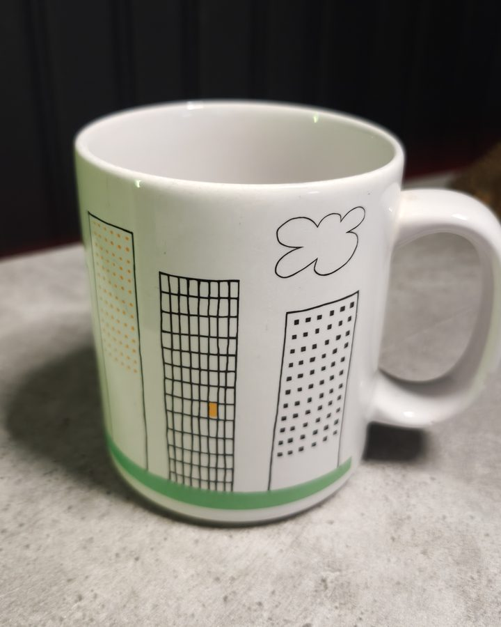
La taza sobre la encimera, de frente y con el dibujo entero. Ni fondo cuidado ni luz de estudio: eso lo pone el paso siguiente.
DREAMINA · ESTUDIO DE MARKETING · IMAGEN DE IA
Subo la foto como producto y escribo lo que quiero. Sin plantillas.
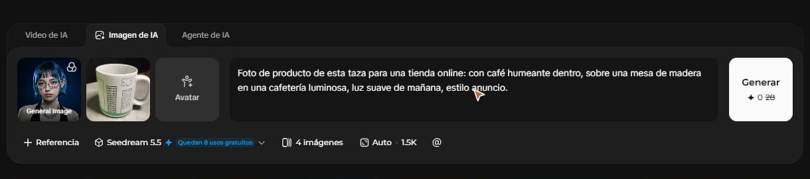
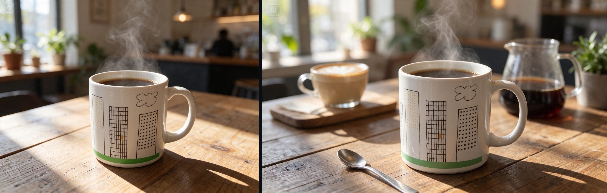
Mira cada foto antes de usarla. Me devolvió cuatro y una traía letras inventadas. Fuera.
DREAMINA · ESTUDIO DE MARKETING · VÍDEO DE IA
El mismo producto, en la pestaña de vídeo. Tres peticiones, tres clips verticales de 5 segundos.
Di qué hace la cámara y qué hace el producto. Y cierra con «Sin texto en pantalla».
CAPCUT PARA PC · EDITPILOT
Grabé un minuto hablando de la taza, con mis pausas y mis «eeeh». Abrí EditPilot y se lo pedí en español:
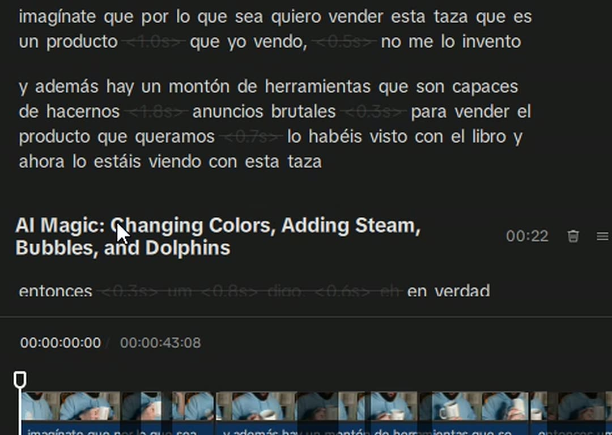
De 1:01 a 0:43. En la transcripción ves lo que quita, tachado, y lo que no te convenza lo retocas a mano en la línea de tiempo.
CAPCUT PARA PC · EDITPILOT
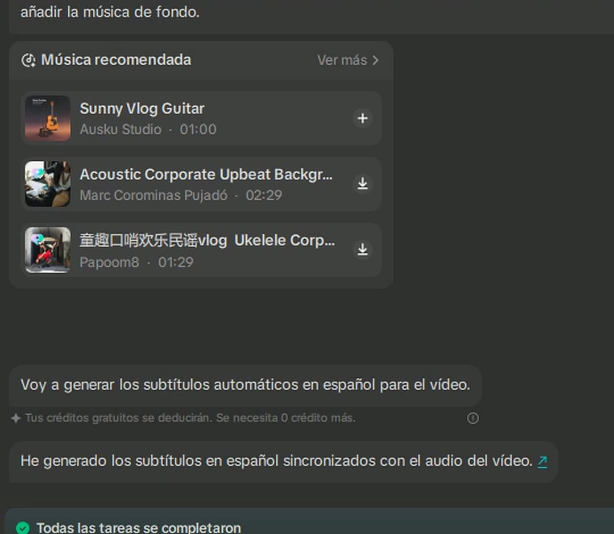
Una cosa por petición. Pedí subtítulos y música en la misma frase y llegó la música. Los subtítulos salieron al pedirlos aparte.
CAPCUT PARA PC · LÍNEA DE TIEMPO
Importo los tres clips y los arrastro a la pista de encima de mi toma, justo donde hablo de la taza. Mi voz sigue debajo y en pantalla sale la taza.
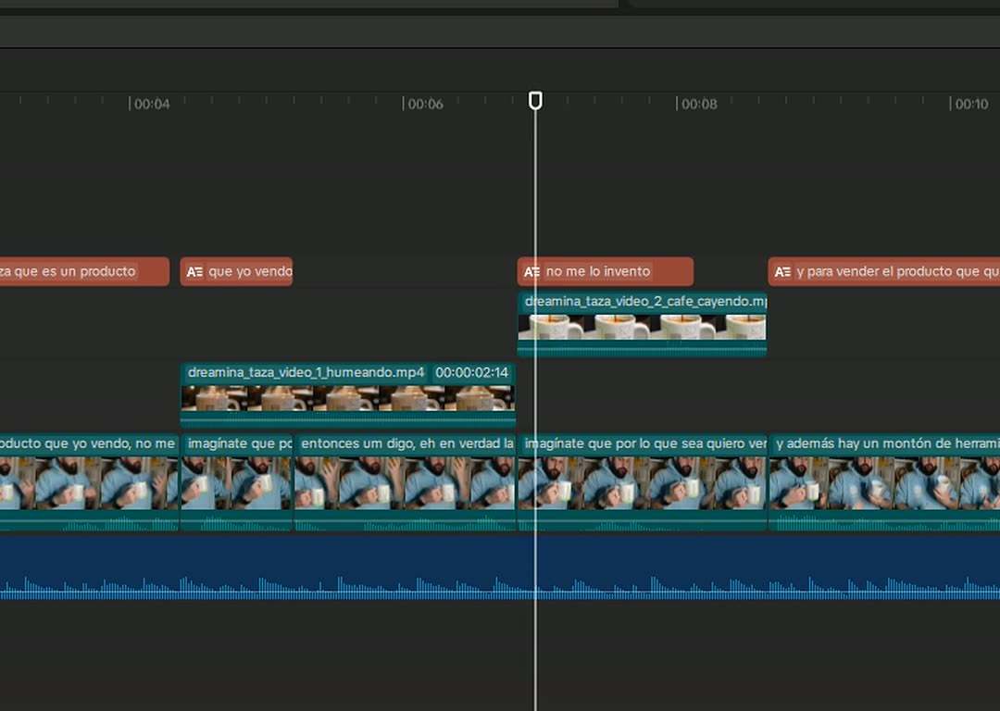
La música, muy por debajo de la voz. Yo acabé bajándola 30 dB.
CAPCUT PARA PC · EDICIÓN CON IA
Clic derecho sobre el clip, «Edición con IA», y lo pides con palabras:
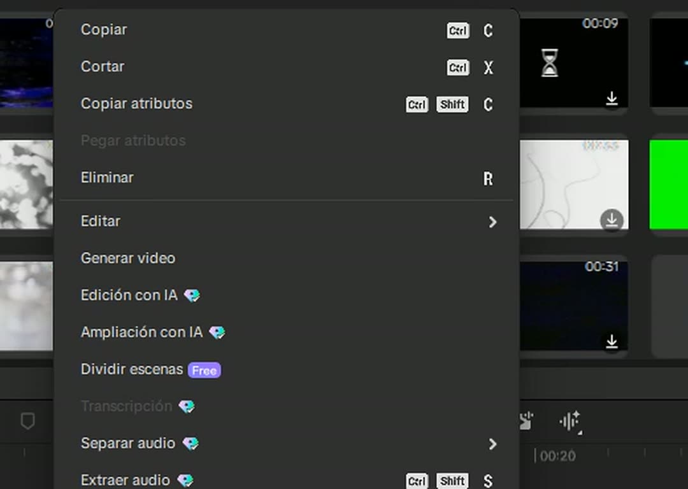
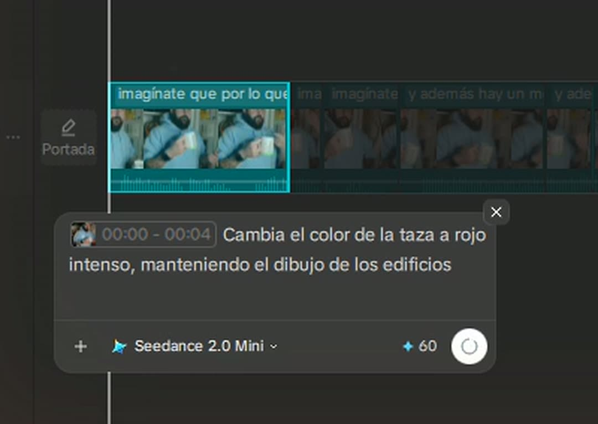
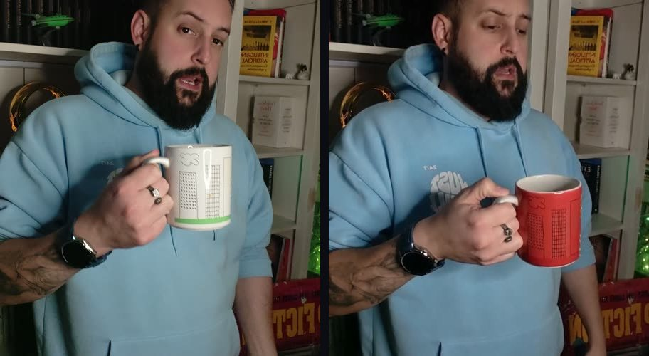
El clip tiene que durar 4 segundos o más. Con menos, no arranca.
CAPCUT PARA PC · EDITPILOT
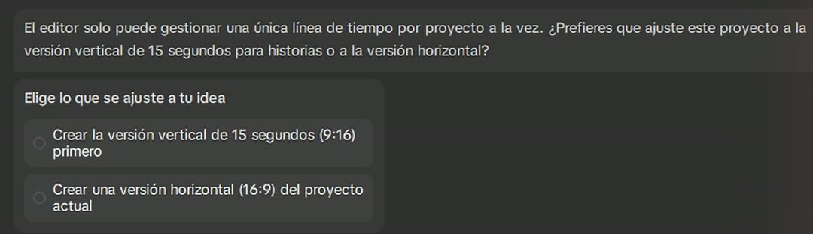
EditPilot trabaja sobre una línea de tiempo cada vez: te pregunta por cuál empieza y la otra la pides después.
CAPCUT PARA PC · EDITPILOT
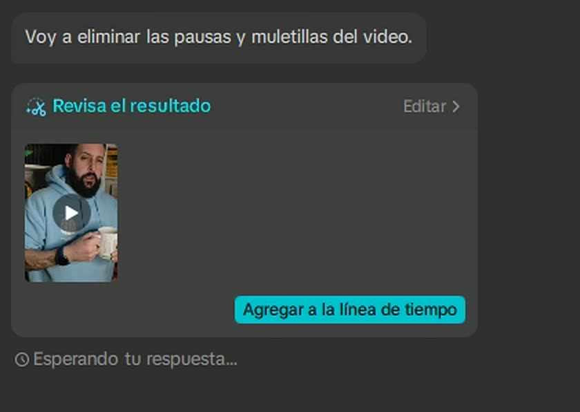
EditPilot te enseña el resultado antes de aplicarlo. Yo repaso los cortes uno a uno: el que sale hablando soy yo.